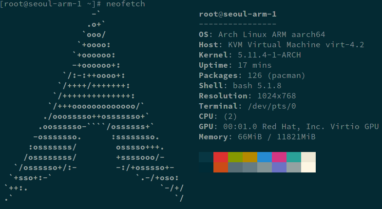

现有系统安装ArchLinux（ARM篇）
2021-08-06
 次阅读
次阅读
次阅读
文章目录
前言
之前写过现有系统安装ArchLinux，针对的是x86架构，后来甲骨文推出了arm架构的vps,虽然也重新安装了ArchLinuxARM，但未做记录。昨天估计首尔区放水，成功开通。趁这次重装，记录安装过程。因大体与x86安装过程类似，仅简要记录关键步骤。
前期准备
与前文一致，不作赘述。
创建chroot环境
- 安装
debootstrap，创建bootstrap。
|
|
- chroot
|
|
使用chroot环境安装系统
挂载设备、删除旧系统部分，与前文一致，不作赘述。
- 安装基础系统
因debootstrap没有预装wget,需先安装，然后下载ArchLinuxARM-aarch64-latest.tar.gz,并解压。
|
|
- chroot，进入目标系统
|
|
- 初始化 pacman keyring
|
|
完善系统
以下部分与前文一致，不作赘述。
- 时区，此处选择东八区
- 本地化
- SSH
- 设置root密码
以下部分与前文有所改动。
- 网络设置
无需创建systemd-networkd配置文件，其他不变。
- 设置boot
/boot/loader/entries/arch.conf内容如下，其他不变。
|
|
进入新系统
连续输入两次 exit 退出到原系统， 然后 reboot 重启，等待几分钟后，重新连接ssh,进入则表明重装成功。
